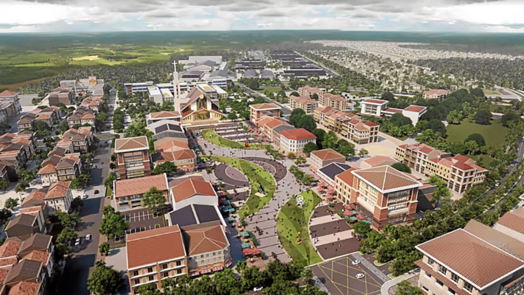
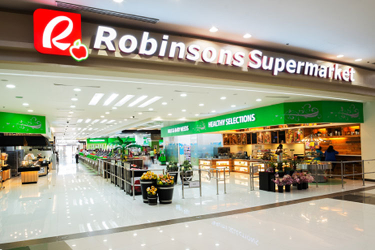
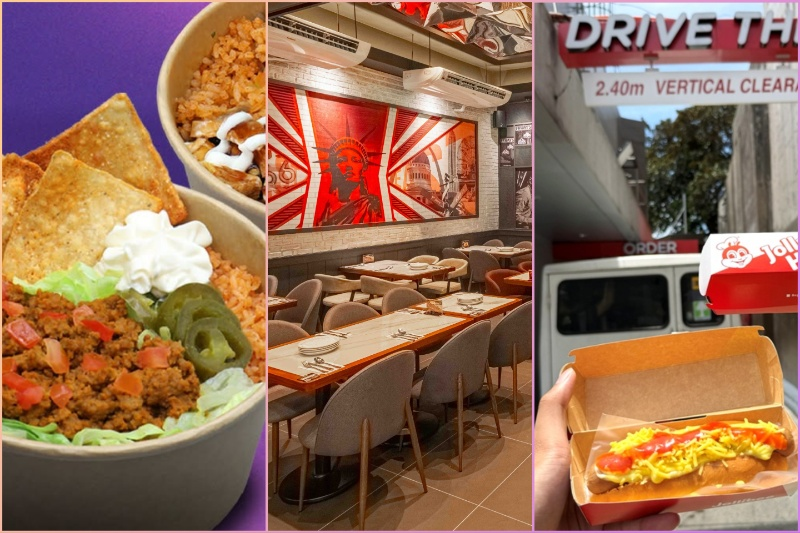

Tape
Yesterday was rice and storms. Today the operators are moving. McD is locking regional chicken as it punches toward 900 stores. Jollibee is still buying the weekend drive-thru visit with a P149 pair, not a menu-wide cut. Gokongwei takes the supermarket group private Monday.
For Calamba, ALI is putting more households into Nuvali, Lipa, and now Tarlac Cresendo. The mall F&B list next door is branded-up. That’s new rooftops and new rent, not a reason to sit in-line next to Chili’s.

McD accredits more PH chicken plants
30 Aug 2026
McDonald’s PH is accrediting more local chicken plants as it goes from 862 restaurants toward about 900 by year-end. Four to five major PH poultry suppliers now, plus regional facilities so stores outside Metro Manila are not all fed from one hub. Rice with Chicken McDo is already local. Volumes not disclosed.
Open the piece

ALI lots in Tarlac, Nuvali, Lipa
30 Aug 2026
Ayala Land is launching its first residential project at Cresendo in Tarlac, plus new lot phases in Nuvali (Laguna) and Lipa (Batangas). Capex lifted to about P60B. Sites sit on CALAX, SCTEX Luisita, and the coming NSCR.
Open the piece

[promo] Nuvali mall F&B, Broadfield Makro
30 Aug 2026
Ayala’s own Nuvali push: Ayala Malls Nuvali targeted late 2026. Dining names include Chili’s, The Matcha Tokyo, One World Deli. Broadfield (Laguna) getting Makro. Southmont (Silang, Cavite) opening estate roads this quarter.
Open the piece

Robinsons Retail leaves the PSE Monday
30 Aug 2026
Robinsons Retail leaves the PSE 31 Aug. Gokongwei group at 99.69% after the JE Holdings tender (P11.09B). H1 sales P106.75B, attributable income P1.94B, down from P2.25B. Food, drugstore, department, DIY.
Open the piece

[promo] Two Jolly Hotdogs for P149
30 Aug 2026
Jollibee weekend Joy-Thru: two Jolly Hotdogs for P149 Sat–Sun until 13 Sept at participating drive-thrus. Dorothy Ching: weekend drive-thru is the habit they’re buying. Save P27 vs regular.
Open the piece